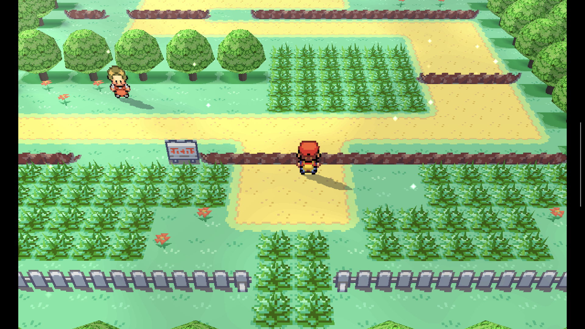
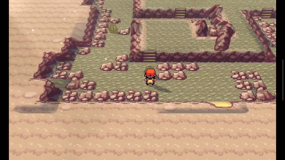
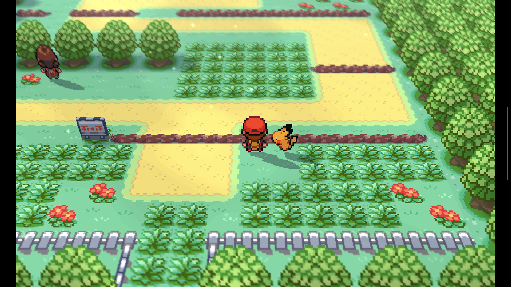
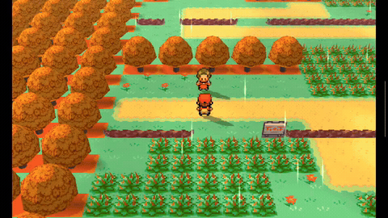
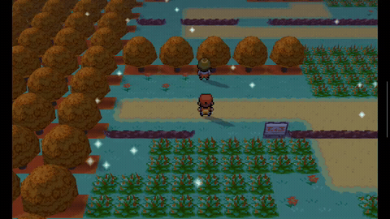
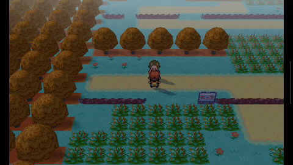
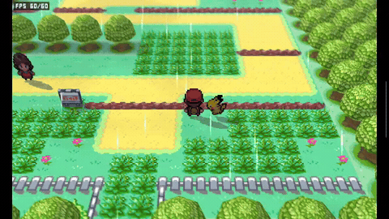
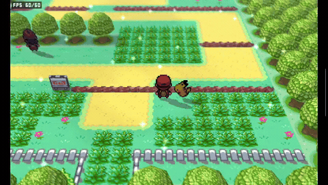
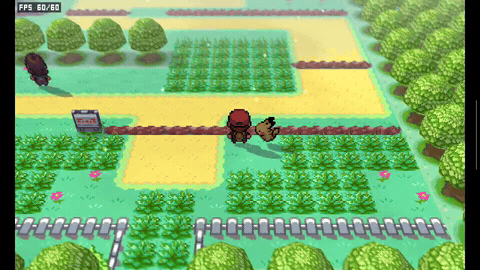
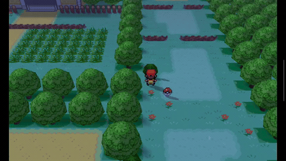

Back to builder
Verified 3D scenery
Real AYN Thor tests and captures. Each listed download passed its recorded tests; coverage differs by version. Coverage remains incomplete; other candidates stay unpublished until they pass. GIFs use 10 FPS for file size and do not demonstrate runtime frame rate.
FRLG+
Bundle: FRLG-Plus-3D-Scenery-Winter-v3-2026-11-19.zip. Check the version before comparing coverage.
Field / battle / active / automatic climate minimum sampled FPS: 59.7 / 59.8 / 59.7 / 59.7. Zero logged work over the frame budget and zero active audio underruns. Strength, Rock Smash and multi-rock visibility verified.
Matching ROM-free build bundle · 2D/3D, seasons and battle gallery

Strength movement

Rock Smash

Source c14c941d34d71a63cecc758e5353072d4d7fb9f6; CI build.
FireRed
Bundle: FireRed-3D-Scenery-Winter-v3-2026-11-19.zip. Check the version before comparing coverage.
Field / battle / active / automatic climate minimum sampled FPS: 59.8 / 59.8 / 59.7 / 59.8. Zero logged work over the frame budget and zero active audio underruns. Strength, Rock Smash and multi-rock visibility verified.
Matching ROM-free build bundle · 2D/3D, seasons and battle gallery

Strength movement

Rock Smash

Source fd5f727f26b86814b4f1943e4bcf8c52e02c1061; CI build.
Classic
Bundle: Classic-3D-Flora-Climate-v2-2026-11-19.zip. Check the version before comparing coverage.
Field / battle / active / automatic climate minimum sampled FPS: 59.8 / 59.8 / 59.8 / 59.8. Zero logged work over the frame budget and zero active audio underruns. Strength, Rock Smash and multi-rock visibility verified.
Matching ROM-free build bundle · 2D/3D, seasons and battle gallery

Strength movement

Rock Smash

Source 0cdbf1888d442b2b21e239c012188f03baa6e860; CI build.
FRLG+: changing weather
Choose Visual Climate → Automatic for calendar seasons and randomized weather; Manual provides fixed previews. Each automatic fade takes eight seconds. Native weather takes priority.

rain
snow
fogClassic: changing weather
Choose Visual Climate → Automatic for calendar seasons and randomized weather; Manual provides fixed previews. Each automatic fade takes eight seconds. Native weather takes priority.

rain
snow
fogFRLG+: winter ground and cuttable trees
Grass and verified dirt paths receive textured snow. Seasonal scenery stays consistent through the outdoor battle camera. Other scenery coverage remains incomplete. Winter minimum sampled FPS: 59.8.


FireRed: winter ground and cuttable trees
Grass and verified dirt paths receive textured snow. Seasonal scenery stays consistent through the outdoor battle camera. Other scenery coverage remains incomplete. Winter minimum sampled FPS: 59.8.


FRLG+: winter battle

FireRed: winter battle

Build checksums and measurement scope